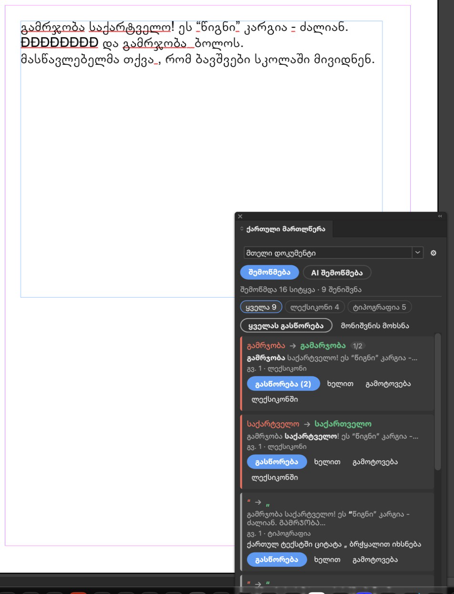

ქართული მართლწერა InDesign-ისთვის
ფლაგინი ქართულ ტექსტში პოულობს მართლწერისა და ტიპოგრაფიის შეცდომებს, გვერდზე წითლად ხაზავს და ერთი კლიკით ასწორებს. ნებისმიერი გასწორება Undo-თი ბრუნდება.
ინსტალაცია
შესაძლებლობები
ოფლაინ ლექსიკონი
ქართული Hunspell ლექსიკონი 50 000 სიტყვას დაახლოებით ერთ წამში ამოწმებს. ინტერნეტი არ სჭირდება.
ქართული ტიპოგრაფია
"…" და “…” ბრჭყალებს ცვლის „…“-ით, შლის ზედმეტ ჰარებს, ჰარებს შორის დეფისს ცვლის ტირით.
გასწორება ერთი კლიკით
ერთი ადგილი, ერთნაირი შეცდომის ყველა ადგილი ან ყველაფერი ერთად. ერთი Undo ყველაფერს აბრუნებს.
მონიშვნა გვერდზე
შეცდომები დოკუმენტში წითელი ტალღოვანი ხაზით ჩანს. ხაზი არ იბეჭდება და PDF-ში არ გადადის.
AI შემოწმება (არჩევითი)
Anthropic Claude პოულობს სიტყვის ფორმის, გრამატიკისა და პუნქტუაციის შეცდომებს და მოკლედ ხსნის თითოეულს.
პირადი ლექსიკონი
სახელები და ტერმინები ერთხელ დაამატე. სია .txt ფაილად შეგიძლია გაიტანო და შემოიტანო.
რას ამოწმებს
- მთელ დოკუმენტს, მიმდინარე სტატიას ან მონიშნულ ტექსტს, ცხრილებისა და სქოლიოების ჩათვლით.
- თანამედროვე ქართულს (მხედრული), მთავრულითაც.
- ინტერფეისი ინგლისურად და ქართულად (პარამეტრები → ინტერფეისის ენა).
ინსტალაცია
- გახსენი Creative Cloud აპლიკაცია: Stock & Marketplace → Plugins.
- მოძებნე Georgian Spell Check და დააჭირე Get.
- InDesign-ში გახსენი Plug-Ins → Georgian Spell Check.
საჭიროა Adobe InDesign 2023 (18.5) ან უფრო ახალი.
გამოყენება
- აირჩიე არე: მთელი დოკუმენტი, მიმდინარე სტატია ან მონიშნული ტექსტი.
- შემოწმება — ლექსიკონი და ტიპოგრაფია, უფასოდ და ოფლაინ. AI შემოწმება — დამატებით AI.
- შედეგზე დაკლიკება დოკუმენტში შესაბამის ადგილზე გადაგიყვანს.
- გასწორება, სხვა ვარიანტი, ხელით, გამოტოვება ან ლექსიკონში.
- ყველას გასწორება დადასტურების შემდეგ ყველაფერს ასწორებს. Edit → Undo (⌘Z / Ctrl+Z) ერთბაშად აბრუნებს.
AI შემოწმება
AI შემოწმება არჩევითია. ის იყენებს Anthropic-ის Claude მოდელებს შენი Anthropic API გასაღებით, რომელსაც პარამეტრებში შეიყვან. ხარჯს Anthropic შენს ანგარიშზე გიწერს; პანელი თითოეული შემოწმების ღირებულებას აჩვენებს. აბზაცები Anthropic-ს მხოლოდ „AI შემოწმებაზე“ დაჭერისას ეგზავნება. ლექსიკონი და ტიპოგრაფია გასაღების გარეშე მუშაობს და ტექსტს არსად აგზავნის. იხ. კონფიდენციალურობის პოლიტიკა (ინგლისურად).
მხარდაჭერა
კითხვები, ხარვეზები ან სიტყვები, რომლებიც ლექსიკონს აკლია: wermichelle@gmail.com.
წყაროები
ქართული ლექსიკონი: ka_GE.spell (Gabriel Margiani, MIT), აგებულია GeoWordsDatabase-ით (დათო ბუმბეიშვილი, MIT) და Crúbadán-ით (Kevin Scannell, CC BY 4.0). ძრავა: nspell (MIT).